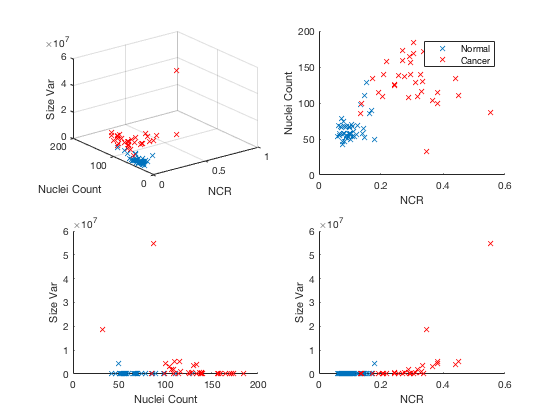
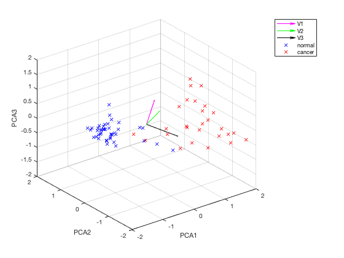
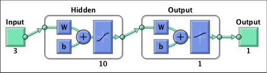
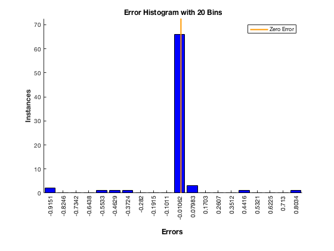
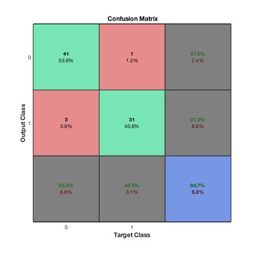
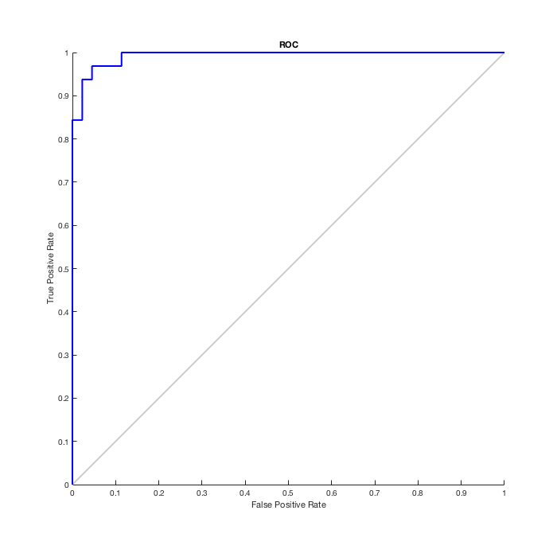

Contents
SKIN CANCER DETECTOR
This code builds a system to automatically detect melanoma histology. To use it, download the folder and use the sample data provided or your own to train the models. These models can be customized adjusting their parameters. Uncomment the last two sections to test the created models with new histological data.
clc; close all; clear all;
Upload training images and extract features
% Specify the folder where normal samples are. myFolder = '/Users/Sergi/Downloads/Skin-Cancer-Detection-using-a-Computer-based-System-master/Normal'; % Check to make sure that folder actually exists. Warn user if it doesn't. if ~isdir(myFolder) errorMessage = sprintf('Error: The following folder does not exist:\n%s', myFolder); uiwait(warndlg(errorMessage)); return; end % Get a list of all files in the folder with the desired file name pattern. filePattern = fullfile(myFolder, '*.bmp'); % Samples images are bmp format. Modify it if necessary. theFiles = dir(filePattern); % Initialize matrix of normal features n = length(theFiles); normal_features = zeros(n,4); normal_features(:,4) = zeros(n,end); for i = 1 : n baseFileName = theFiles(i).name; fullFileName = fullfile(myFolder, baseFileName); RGB_sample = imread(fullFileName); % Read RGB image. RGB_sample = RGB_sample(:,round(size(RGB_sample,1)/3):end-8,:); % Remove black border at the right. Remove line of code if necessary. gray_sample = rgb2gray(RGB_sample); % Convert RGB image to gray scale. threshold= 120; % Threshold value. Modify if necessary. BW = gray_sample<threshold; % Convert gray scale image to black and white. R = 3; % Disk radius. Adjust if necessary. se = strel('disk', R); BW = imdilate(BW, se); se = strel('disk', R); BW = imerode(BW, se); % Melanoma features % Nuclei to Cytoplasm Ratio (NCR) normal_features(i,1) = NCR(BW); % Nuclei Count Function BW = gray_sample<threshold; [nuclei, V] = nuclei_counter(BW); % Adjust intern parameters if necessary. normal_features(i,2) = nuclei; normal_features(i,3) = V; end % Specify the folder where cancer samples are. myFolder = '/Users/Sergi/Downloads/Skin-Cancer-Detection-using-a-Computer-based-System-master/Cancer'; % Check to make sure that folder actually exists. Warn user if it doesn't. if ~isdir(myFolder) errorMessage = sprintf('Error: The following folder does not exist:\n%s', myFolder); uiwait(warndlg(errorMessage)); return; end % Get a list of all files in the folder with the desired file name pattern. filePattern = fullfile(myFolder, '*.bmp'); % Samples images are bmp format. Modify it if necessary. theFiles = dir(filePattern); % Initialize matrix of normal features n = length(theFiles); cancer_features = zeros(n,4); cancer_features(:,4) = ones(n,end); for i = 1 : n baseFileName = theFiles(i).name; fullFileName = fullfile(myFolder, baseFileName); RGB_sample = imread(fullFileName); % Read RGB image. RGB_sample = RGB_sample(:,round(size(RGB_sample,1)/3):end-8,:); % Remove black border at the right. Remove line of code if necessary. gray_sample = rgb2gray(RGB_sample); % Convert RGB image to gray scale. threshold= 120; % Threshold value. Modify if necessary. BW = gray_sample<threshold; % Convert gray scale image to black and white. R = 3; % Disk radius. Adjust if necessary. se = strel('disk', R); BW = imdilate(BW, se); se = strel('disk', R); BW = imerode(BW, se); % Melanoma features % Nuclei to Cytoplasm Ratio (NCR) cancer_features(i,1) = NCR(BW); % Nuclei Count Function BW = gray_sample<threshold; [nuclei, V] = nuclei_counter(BW); % Adjust intern parameters if necessary. cancer_features(i,2) = nuclei; cancer_features(i,3) = V; end
Visualize the extracted features
close all; clc n = size(normal_features,1); features = [normal_features; cancer_features]; Visualize(features,n); % Visualize the extracted features. [linear_corr,pval] = corr(features(:,1:3)) % Asses correlation in the data. % If p-value is smaller than 0.05, correlation is significantly different % from 0.
linear_corr =
1.0000 0.6657 0.5151
0.6657 1.0000 -0.0329
0.5151 -0.0329 1.0000
pval =
1.0000 0.0000 0.0000
0.0000 1.0000 0.7776
0.0000 0.7776 1.0000
 Perform Principal Component Analysis (PCA)
% This step may not be necessary (although recommended) if there is no % correlation in your data. [V1,V2,V3,pca_3d] = PCA(features,normal_features);
Machine learning: train and asses model performance
n = size(normal_features,1); c = size(cancer_features,1); NCR = pca_3d(:,1); Nuclei = pca_3d(:,2); Variance = pca_3d(:,3); Ground_truth = vertcat(repmat(['Normal'],n,1),repmat(['Cancer'],c,1)); data = table(NCR,Nuclei,Variance,Ground_truth); % Classification Learner [trainedClassifier1, validationAccuracy1]= trainComplexTree(data) [trainedClassifier2, validationAccuracy2]= trainCoarseGaussianSVM(data) [trainedClassifier3, validationAccuracy3]= trainLinearDiscriminant(data) [trainedClassifier4, validationAccuracy4]= trainSubspaceDiscriminant(data) % To make predictions with the returned 'trainedClassifier' on new data x % use yfit = trainedClassifier.predictFcn(x); % Neural Net Pattern Recognition % Transpose column vector data x = pca_3d'; t = features(:,4)'; net = NeuralNetwork(x,t); % To make predictions with the returned trained network 'net' on new data x, % use y = net(x); % yfit = trainedClassifier.predictFcn(T)
trainedClassifier1 =
predictFcn: @(x)treePredictFcn(predictorExtractionFcn(x))
RequiredVariables: {'NCR' 'Nuclei' 'Variance'}
ClassificationTree: [1x1 ClassificationTree]
About: 'This struct is a trained classifier exported from...'
HowToPredict: 'To make predictions on a new table, T, use: ...'
validationAccuracy1 =
0.9605
trainedClassifier2 =
predictFcn: @(x)svmPredictFcn(predictorExtractionFcn(x))
RequiredVariables: {'NCR' 'Nuclei' 'Variance'}
ClassificationSVM: [1x1 ClassificationSVM]
About: 'This struct is a trained classifier exported from ...'
HowToPredict: 'To make predictions on a new table, T, use: ...'
validationAccuracy2 =
0.9605
trainedClassifier3 =
predictFcn: [function_handle]
RequiredVariables: {'NCR' 'Nuclei' 'Variance'}
ClassificationDiscriminant: [1x1 ClassificationDiscriminant]
About: 'This struct is a trained classifier expor...'
HowToPredict: 'To make predictions on a new table, T, us...'
validationAccuracy3 =
0.9605
trainedClassifier4 =
predictFcn: @(x)ensemblePredictFcn(predictorExtractionFcn(x))
RequiredVariables: {'NCR' 'Nuclei' 'Variance'}
ClassificationEnsemble: [1x1 classreg.learning.classif.ClassificationEnsemble]
About: 'This struct is a trained classifier exported ...'
HowToPredict: 'To make predictions on a new table, T, use: ...'
validationAccuracy4 =
0.9474
performance =
0.1315
   